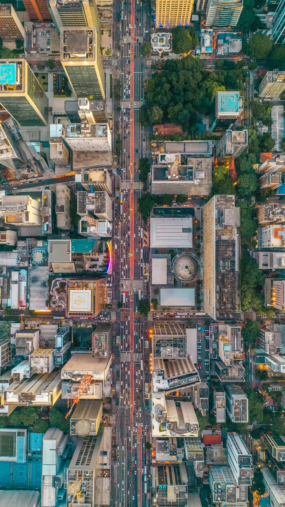

As cidades sempre foram mais do que cenário. Elas são organismos vivos, carregados de histórias, encontros e deslocamentos.
Ao longo da minha trajetória, cada cidade por onde passei deixou marcas que ultrapassam a arquitetura visível. São memórias que se misturam com projetos, decisões e caminhos que fui construindo.
"Cada cidade guarda uma versão de quem fomos."
Caminhar por uma rua desconhecida é também caminhar por dentro de si. Há algo na escala urbana que revela nossas próprias transformações.
Entre traços técnicos e experiências pessoais, fui entendendo que a cidade também nos projeta, não apenas o contrário.
Quando revisitamos lugares importantes, percebemos que espaço e memória nunca estiveram separados. Eles evoluem juntos e ajudam a contar a história da nossa própria formação.